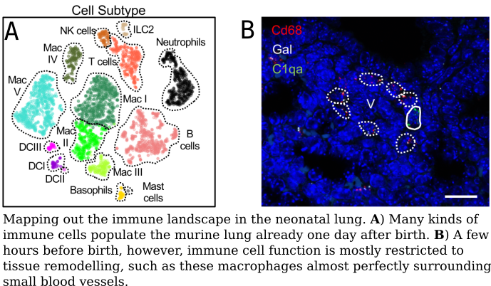

OPEN POSTDOCTORAL POSITION (see announcement)
Integrating biomedicine, computer science and engineering, one cell at a time.
Projects
Single cell immunology of severe dengue

Dengue is the most widespread mosquito-transmitted viral disease with 400 million infections every year. Millions of people including children and pregnant women suffer from severe symptoms such as internal bleeding and organ failure, but the pathogenesis of severe dengue is unclear. The lab is developing new single-cell transcriptomic approaches (experimental and computational) to understand what different parts of the immune system are doing during severe dengue. We hope that our research will be useful to put an end to this global disease.
References
A breath of fresh air: single cell biology of the neonatal lung

No matter who you are, we all share one common experience: birth. The lung is a very special organ at birth, because it lies deep inside our body yet it gets suddenly exposed to chemical and biological shock as soon as we take in our first breath of air. As reactive oxygen and pathogens fill the air cavities, lung cells have to rapidly adapt to conflicting requirements: maximizing access to gas, but minimizing the risk of virus and bacterial infection. Our lab is leveraging single cell technologies to explore the biology of this fascinating transition. A deeper understanding of this fundamental biological system will help us treat the lung conditions affecting thousands of newborn babies every year.
References
Hybrid classification and clustering of single cell tumor samples

Cell atlases are huge collections of single cell transcriptomes that describe in extreme molecular detail the composition of human tissues. We are pioneering new algorithms to leverage cell atlases to rapidly elucidate the composition of tumor biopsies.
References
*: co-first author.